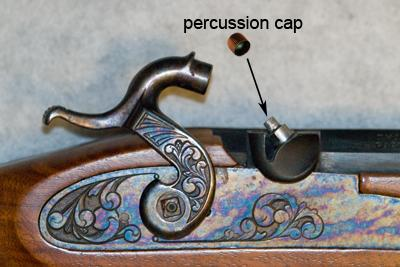

Luke Stranahan is an engineer by trade and an armed patriot by inclination. He writes for Return of Kings as a leisure pursuit and an attempt to do his part to help reverse the slide into moral decrepitude of modern society. Follow him on Twitter.


“Only accurate rifles are interesting.” Though the value of this statement is contested in gun articles back then and today, Americans have always been able to shoot well. Being a frontier nation at the time of its origin, and having the right to bear arms affirmed in the Constitution, meat has been put on the table, and various opponents put on the ground due to rifles over the course of the 240 year history of the country.
As this is a practical article, I’ll gloss over entire swaths of history here. Gunpowder is considered to have been invented in China in the 13th century and may have been independently developed elsewhere at the same time. Referred to as black powder today, it was originally a fireworks propellant, and was fashioned into single shot weapons that spread through the Middle East and into Europe.
British Brown Bess with bayonet.
By the time the American colonies got established, the gun technology of the day, along with the idea of pikes and spears, got combined into a fairly standardized infantry musket with a bayonet.
Muskets had some similar traits to cannons, with size being an obvious exception. You would pour a measure of powder down the bore, and drop in a ball that was often undersize for the bore of the musket, and use the ramrod stored under the barrel.
Point the business end down range, cock back your hammer off to the side of the gun (often a piece of flint against a steel striker, the “flintlock”) and prime the pan with some fine grade powder. Shoulder it, pull the trigger, and hopefully the thing fires, sending your ball rattling down the bore to inaccurately fly some short yardage before running out of velocity and hitting the ground.
Flintlock Detail.
Some improvements to the process were made with the first “cartridges,” which were paper wraps of a measure of gunpowder and a ball. You bit the end off, primed the pan, poured the rest down the barrel, then flipped the wrapper over and shoved the whole thing, ball first, down the barrel. This also cleaned the bore a bit, kept the ball securely against the powder, and stabilized it going down the bore in flight.
Paper Cartridge and Minie Ball Civil War era design
There was really no difference between the historical equivalent of a shotgun versus predecessors to rifles, other than putting in shot vs. ball. Rifling is what makes a gun accurate, and is a number of grooves cut into a barrel that are helical in nature and serve to spin a projectile as it goes down the bore. Although there are newer types of rifling like polygonal, traditional rifling is composed of lands and grooves, where the lands are what contacts the bullet and spins it as it moves down the barrel.
Stylized rifling surrounding Bond is the trademark of the “gun barrel opener” of all Bond movies.
Rifling requires a tight fit. Bullets have diameters in between the larger diameter of the grooves, and the smaller diameter of the lands for a press fit. This is not a problem with modern breechloading rifles where the bullet will simply sit behind the rifling’s start when chambered, but it was a real bitch to shove a ball down a rifled muzzleloader’s barrel compared to the undersized ball in a smoothbore musket mentioned earlier.

Rifling on a tank gun
However, people in the colonies that weren’t in the cities had to hunt and deal with the occasional Indian group, so knowing how to shoot once and kill something was more important than multiple shots that might not hit anything, and the tradeoff of the long loading time was worth the increased accuracy.
Groups like Morgan’s Riflemen and others used the Kentucky Rifle to great psychological effect, even though there weren’t many of them. Something about some guy sneaking out of the trees and shooting you from twice the distance that you could manage scared the British Regulars.
The Civil War was an absolute mess in armament, and beyond the scope of this article to cover much of it, but there were a few technical advances that should be addressed.

The percussion cap is a small amount of priming compound inside a copper cup, and it is the direct predecessor of the modern primer. It replaced the flint and steel , and also provided its own fuel for the ignition blast. Modern muzzleloaders can still use percussion caps, though they are usually inline, not off to the side like they were back then, and most of them use modern primers in little plastic discs that you can reload after use.
Blackpowder cartridges.
The other advance was breechloading cartridges. The original ones were carryovers from the muzzleloader cartridge; paper or linen packages with a bullet and a charge. The Sharps rifle used these cartridges, loaded from the breech, and a percussion cap.
Brass cartridges soon followed. Rimfires (the .22 Short, one of the originals, is still around today, albeit with smokeless powder) and a now-obsolete ignition type called the pinfire were the two methods. Rimfires have priming compound in the rim and the hammer crushed it to fire. Pinfires had a pin sticking out the side which punched a primer inside the cartridge for ignition.
Cross-section of a pinfire. The pin crushed the priming compound below it when fired.
Flammable cartridges would conveniently burn themselves up upon use, and you simply reloaded, but a brass cartridge has to be extracted before reloading can occur. Rimfires were pulled out by their rims, and the pinfires were pulled out by the end of the pin after firing. Rimmed cartridges would continue in this fashion until centerfire cartridges and the necessity for box magazines made rebated rims necessary.
Although copper cartridges were briefly used, centerfire brass cartridges soon became standard soon after the Civil War. The 1873 Springfield “Trapdoor” rifle is interesting due to it being almost a modern single shot rifle and using one of the oldest cartridges still around, the 45-70.
Repeaters, a manual action rifle that could hold multiple rounds of ammunition, showed up in the Civil War (notably the Spencer Carbine), and carried over into the days of Western expansion. The Henry Rifle, was noted for being “a rifle you could load on Sunday and shoot all week long” due to being it able to hold 17 rounds, which was unheard of at the time.

Early repeaters. Henry Rifle on top (magazine under barrel) and Spencer Carbine (magazine in buttstock.)
Although the Gatling Gun was used in the Civil War, it was not a machine gun. Rather, it was a crank operated, multiple barreled, manual action gun, but it was still damned impressive for running on black powder. The Maxim gun was the first true machine gun, arriving in the 1880s.
1904 Maxim Gun
Smokeless powder, of multiple chemical formulas, was developed in the late 1800s, and was primarily conceived to reduce fouling. The residue left over from black powder combustion; fouling is corrosive, sticky, and gunks up a gun in a hurry. Smokeless powder is more powerful, cleaner, and doesn’t blow clouds of black smoke.
Although smokeless powder comes mainly in commercial ammo to end users today, it’s also available in bottles for reloading. Never load a blackpowder weapon of any type with smokeless powder.
Spitzer bullets were the third major improvement of the time. Previously, bullets had been cylinders with hemispherical, or close to it, tips. Spitzer, which means spire, bullets have a point, and are much more aerodynamically efficient. Calibers got smaller, and went from typically .45 or so down to .30 (7.62 mm) and was a lot closer to the current aerodynamic rage of 6.5mm .26 cal bullets than a .45 cal ball nose.
Spitzer bullet geometry
Pointy bullets were wanted by the military so that fire could be done at longer ranges. With modern powder, solid bolt actions were developed by many countries (Britain, Russia, Germany, and the US) and that set up armaments for the first World War, which was primarily a rifles and machine guns fight.
Armaments developed to a certain extent between the World Wars. Machine guns increased their cyclic rate and became somewhat more portable. Bolt action rifles also carried over, as did revolvers and semi-automatic pistols running recoil actions.
Browning Automatic Rifle.
Automatic actions were present, but the concept of getting them into man-portable units was approached in a number of creative ways that showed up in the Second World War. Downsized “light” machine guns, like the Browning Automatic Rifle were select fire, heavy personal weapons firing full sized rifle cartridges like the 30-06. Fully automatic carbines firing pistol cartridges (submachine guns or machine pistols) were also developed. Some carbine sized rifles, like the US M1 Carbine, were also used in the conflict.

M1 Carbine with sling, magazine, mag pouch, and stripper clip.
Most WWII standard battle rifles were bolt action, with the notable exception of the M1 Garand (see title photo) that was semi-automatic, and deserves its own article. The other notable weapon of that conflict was the German StG-44, which was the abbreviation of Sturmgewehr model 1944.
Literally “storm rifle” (as in to storm a position, or assault it), this is where the term “assault rifle” comes from. Automatic rifle fire is an awesome thing, but, even though a battle rifle like the M1918 BAR mentioned above, or the M14 that was the successor to the M1 Garand, or its contemporaries the German G3 or the Belgian FAL, amongst others, will be able to handle fully automatic fire from a full power rifle cartridge, you will not be able to hold the rifle on target under sustained fire.

StG-44, the first Assault Rifle.
Enter the intermediate cartridge, and the bargain of trading a full rifle cartridge for a smaller one that can be controlled under automatic fire and be carried in much greater amounts. An assault rifle is an intermediate sized cartridge firing rifle that is capable of select fire. Select fire is the term for multiple firing modes, usually safety, single shot, and multiple shots per trigger pull, with the latter either being a burst of a number of rounds (three is usual) or fully automatic fire.
The two principle assault rifles of the 20th century are the AK-47 (and later AK-74) developed by Mikhail Kalashnikov and the Soviet Union, and the AR-15/M16/M4 Armalite Rifle developed by Eugene Stoner and the USA. Both can be argued as the most influential of rifles of recent times and will get their own write-ups here.

M16A1, Vietnam era.
Firearm evolution in the past fifty years has mainly been a development of ergonomics and more powerful cartridges for longer ranges. Bullpup is the industry name for a carbine sized rifle that is shortened in overall length by placing the action just in front of the shooter’s shoulder, instead of the traditional position of in front of the trigger hand. This removes a foot of so of total length at the expense of some complicated trigger mechanisms.
Steyr AUG, the first successful bullpup
Next week, we’ll get into action types, common cartridges, different types of rifles available on the civilian market, accessories, and the dreaded Evil Features ™.
Read More: The Fundamentals of Gun Safety